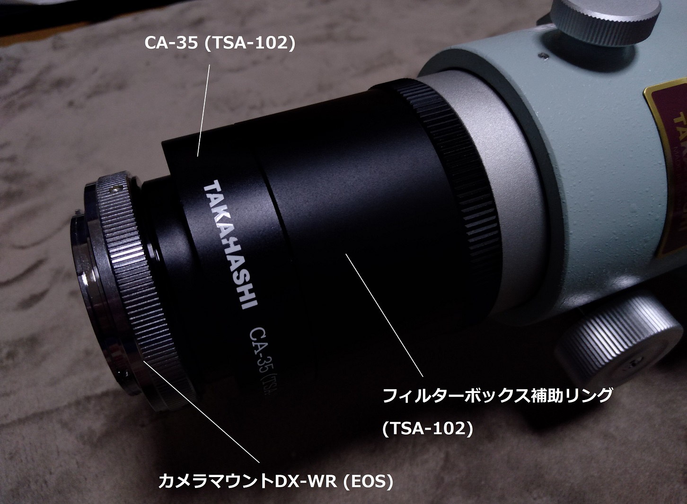
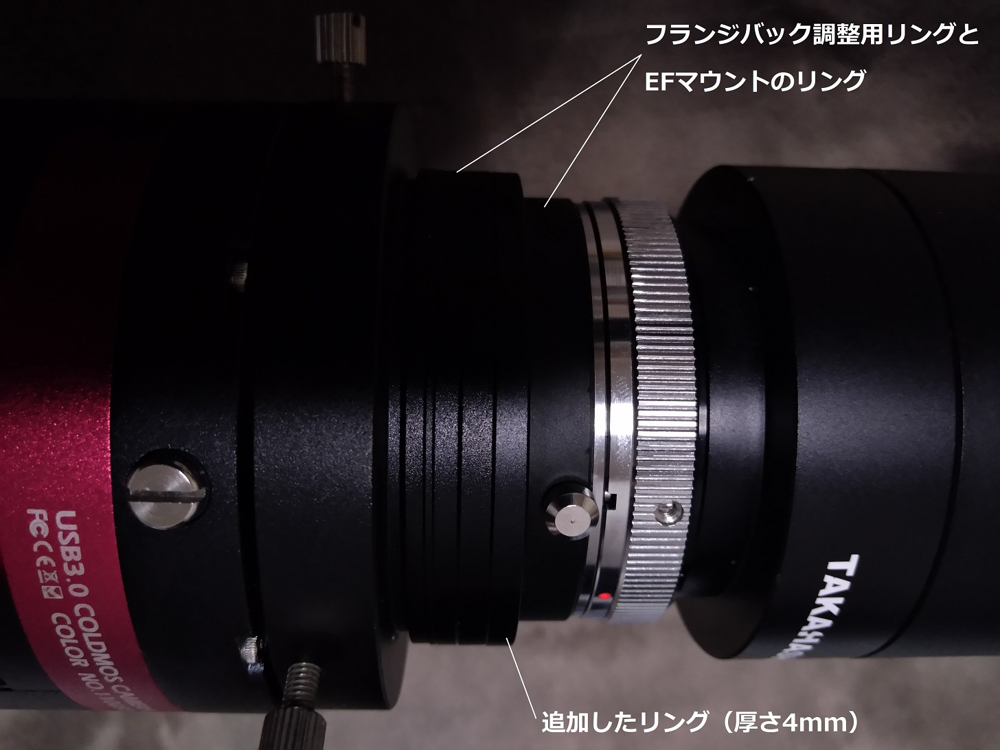
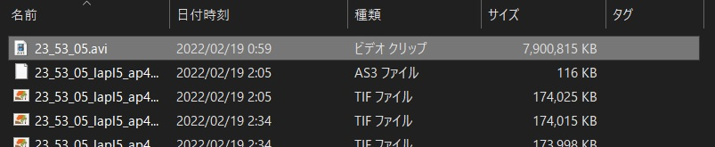
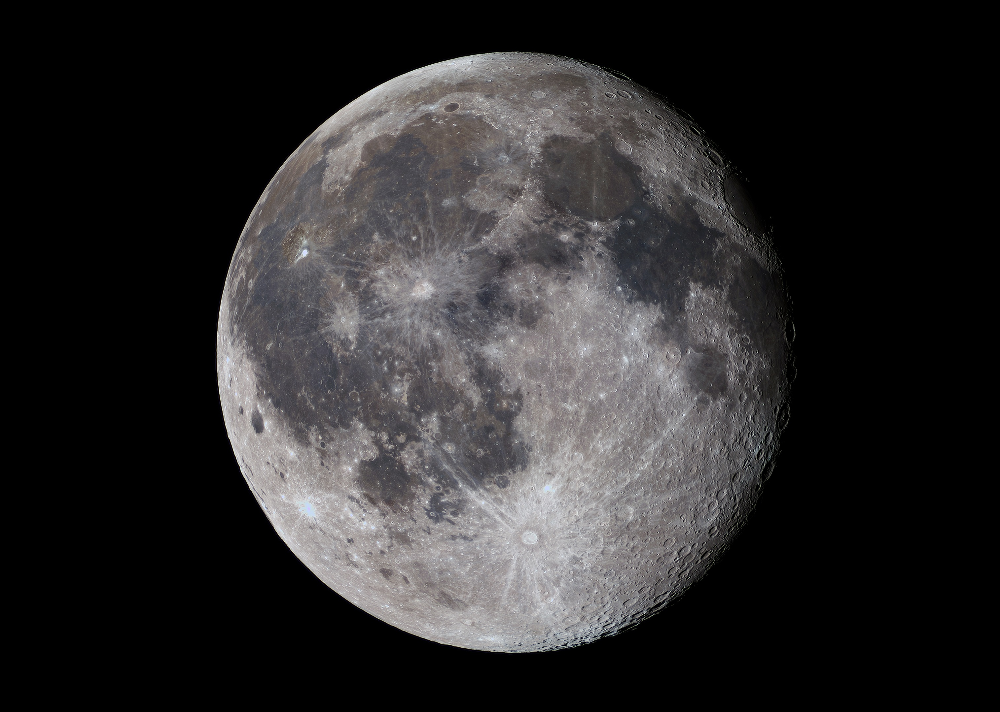

<!DOCTYPE html>
<html>

<head><meta name="generator" content="Hexo 3.8.0">
  <meta charset="utf-8">
  
    <title>
      
        初めての（？）月面撮影 | 
            ほしよみ大学生のブログ
    </title>
    <meta name="viewport" content="width=device-width">
    <meta name="description" content="あいさつ最近本業の研究が佳境に入っていますが，たまには望遠鏡を出して息抜きしようということで，自宅前でも簡単に撮れる月を撮ってみることにしました．動画で撮って，スタック処理するのは初めてです．">
<meta name="keywords" content="天体写真,画像処理,機材,鏡筒">
<meta property="og:type" content="article">
<meta property="og:title" content="初めての（？）月面撮影">
<meta property="og:url" content="http://dabokun.github.io/2022/02/19/00000062-lunar-photo/index.html">
<meta property="og:site_name" content="ほしよみ大学生のブログ">
<meta property="og:description" content="あいさつ最近本業の研究が佳境に入っていますが，たまには望遠鏡を出して息抜きしようということで，自宅前でも簡単に撮れる月を撮ってみることにしました．動画で撮って，スタック処理するのは初めてです．">
<meta property="og:locale" content="ja">
<meta property="og:image" content="http://dabokun.github.io/2022/02/19/00000062-lunar-photo/card.jpg">
<meta property="og:updated_time" content="2022-02-19T13:09:53.185Z">
<meta name="twitter:card" content="summary_large_image">
<meta name="twitter:title" content="初めての（？）月面撮影">
<meta name="twitter:description" content="あいさつ最近本業の研究が佳境に入っていますが，たまには望遠鏡を出して息抜きしようということで，自宅前でも簡単に撮れる月を撮ってみることにしました．動画で撮って，スタック処理するのは初めてです．">
<meta name="twitter:image" content="http://dabokun.github.io/2022/02/19/00000062-lunar-photo/card.jpg">
<meta name="twitter:creator" content="@dabo_pic">
      
        <link rel="alternative" href="/atom.xml" title="ほしよみ大学生のブログ" type="application/atom+xml">
        
          
            <link rel="icon" href="/images/favicon.png">
            
              <link rel="stylesheet" href="/css/style.css">
                <!--[if lt IE 9]><script src="//html5shiv.googlecode.com/svn/trunk/html5.js"></script><![endif]-->
                
                  <script data-ad-client="ca-pub-1350688970555904" async src="https://pagead2.googlesyndication.com/pagead/js/adsbygoogle.js"></script>
</head></html>
<body>
  <div id="container">
    <div class="mobile-nav-panel">
	<i class="icon-reorder icon-large"></i>
</div>
<header id="header">
	<h1 class="blog-title">
		<a href="/">ほしよみ大学生のブログ</a>
	</h1>
	<nav class="nav">
		<ul>
			<li><a href="/">Home</a></li><li><a href="/categories">Categories</a></li><li><a href="/tags">Tags</a></li><li><a href="/archives">Archives</a></li><li><a href="/about">About</a></li><li><a href="/work">Work</a></li>
			<li><a id="nav-search-btn" class="nav-icon" title="Search"></a></li>
			<li><a href="https://github.com/dabokun"></a>
			</li>
			<li><a href="https://twitter.com/dabo_pic"></a></li>
			<li><a href="/atom.xml" id="nav-rss-link" class="nav-icon" title="RSS Feed"></a>
			</li>
		</ul>
	</nav>
	<div id="search-form-wrap">
		<form action="//google.com/search" method="get" accept-charset="UTF-8" class="search-form"><input type="search" name="q" class="search-form-input" placeholder="Search"><button type="submit" class="search-form-submit">&#xF002;</button><input type="hidden" name="sitesearch" value="http://dabokun.github.io"></form>
	</div>
</header>
    <div id="main">
      <article id="post-00000062-lunar-photo" class="post">
	<footer class="entry-meta-header">
		<span class="meta-elements date">
			<a href="/2022/02/19/00000062-lunar-photo/" class="article-date">
  <time datetime="2022-02-19T09:16:12.000Z" itemprop="datePublished">2022-02-19</time>
</a>
		</span>
		<span class="meta-elements author">astr0dab0</span>
		<div class="commentscount">
			
			<a href="http://dabokun.github.io/2022/02/19/00000062-lunar-photo/#disqus_thread" class="article-comment-link">Comments</a>
			
		</div>
	</footer>
	
	<header class="entry-header">
		
  
    <h1 class="article-title entry-title" itemprop="name">
      初めての（？）月面撮影
    </h1>
  

	</header>
	<div class="entry-content">
		
		
		<div id="toc" class="toc-article">
			<p class="toc-title">目次</p>
			<ol class="toc"><li class="toc-item toc-level-3"><a class="toc-link" href="#あいさつ"><span class="toc-number">1.</span> <span class="toc-text">あいさつ</span></a></li><li class="toc-item toc-level-3"><a class="toc-link" href="#TOAで撮影"><span class="toc-number">2.</span> <span class="toc-text">TOAで撮影</span></a></li><li class="toc-item toc-level-3"><a class="toc-link" href="#早速撮影"><span class="toc-number">3.</span> <span class="toc-text">早速撮影</span></a></li></ol>
		</div>
		
		<h3 id="あいさつ"><a href="#あいさつ" class="headerlink" title="あいさつ"></a>あいさつ</h3><p>最近本業の研究が佳境に入っていますが，たまには望遠鏡を出して息抜きしようということで，自宅前でも簡単に撮れる月を撮ってみることにしました．<br>動画で撮って，スタック処理するのは初めてです．</p>
<a id="more"></a>
<h3 id="TOAで撮影"><a href="#TOAで撮影" class="headerlink" title="TOAで撮影"></a>TOAで撮影</h3><p>せっかく TOA があるので，これで撮りたいと思ったのですが，そもそも直焦点での撮影システムを考えることからスタートです（※別機会で以前に僕がM42を撮影していたことをご存じの方がいらっしゃるかと思いますが，その際には借り物の補正レンズを使用していたため，直焦点ではありませんでした）．<br>さて，TOA のシステムチャートを眺めてみると，直焦点撮影は</p>
<p>TOAドローチューブ→50.8アダプタ屈折用(TOA に付属)→CA-35(50.8)→カメラマウント DX-WR (EOS) (EF マウントの場合)</p>
<p>となります．CA-35(50.8)が手元にないのでダメかと思いましたが，FSQ-85 の付属パーツでもいけるのではないかということに気づき，実験してみることにしました．</p>
<p>TOAドローチューブ→フィルターボックス補助リング(TSA-102)→CA-35(TSA-102)→カメラマウント DX-WR (EOS)</p>
<p>という感じです．</p>
<p></p>
<h3 id="早速撮影"><a href="#早速撮影" class="headerlink" title="早速撮影"></a>早速撮影</h3><p>月がのぼってきたので早速試してみます．カメラはQHY-268C (フランジバックは Canon EF 44mmに調整)です．結論から述べると「少し延長すれば月撮影は問題ない」ということになりました．延長がないと，ドローチューブを最も繰り出した状態でジャスピンかどうか判断に困るような状態になります．<br>カメラ側に厚さ 4mm のリングを追加で取り付けて、確実にピントが出ることは確認できました．一眼ではこうはいかないかもしれません．また，ケラレ等も目立ったものはありませんでしたが，淡いものを同じシステムで撮影し強調した際にどうなるかは別途検証が必要かもしれません．機会があったらやってみます．</p>
<p></p>
<p>SharpCap での動画撮影にもあまり慣れていなかったので1時間ほど奮闘し，なんとか動画撮影に成功．AVI ファイルは重いです．6秒ほどの動画ですが，8GB くらいあります笑．月を動画で真面目に撮影する場合は空き容量の多い PC が必須ですね．</p>
<p></p>
<p>AutoStakkert!3 で動画解析とスタッキングをして，PixInsight で処理した結果以下のようになりました．</p>
<p></p>
<div style="text-align: center;">
「月齢18くらいの月」<br>
2022年2月18日 23時53分 神奈川県 鎌倉市<br>
TOA-130NS 直焦点<br>
QHY268C<br>
Gain 80/Offset 20/-20℃/SharpCap動画 6秒<br>
タカハシ EM-200 TemmaPC Jr.<br>
AutoStakkert!3 / PixInsight / Photoshop CC<br><br>
</div>

<p>解像感を高めるために Deconvolution を2回ほどかけてみています．彩度もマシマシ．露光時間を誤ったためか，一部の明るい構造の階調が少し飛んでしまっていますが，なかなかいいのではないかと思います．<br>AutoStakkert! も初めて使ってみました．使い方についてはブログ記事が豊富にあり，それを見ながらであればあまり頭を使わなくてもちゃんと処理してくれる印象がありましたが，Drizzleも入れていたせいか処理に少し時間がかかりました（10分くらい？）．<br>好シーイングの時に，もっと拡大構図で撮影できたら楽しいんだろうなあと思いますが，またの機会にということで，それでは．</p>

		
	</div>
	<footer class="article-footer">
		<a href="https://twitter.com/intent/tweet?text=%E5%88%9D%E3%82%81%E3%81%A6%E3%81%AE%EF%BC%88%EF%BC%9F%EF%BC%89%E6%9C%88%E9%9D%A2%E6%92%AE%E5%BD%B1｜%E3%81%BB%E3%81%97%E3%82%88%E3%81%BF%E5%A4%A7%E5%AD%A6%E7%94%9F%E3%81%AE%E3%83%96%E3%83%AD%E3%82%B0&url=http://dabokun.github.io/2022/02/19/00000062-lunar-photo/" class="twitter-share-button" target="_blank" title="Twitter"></a>
		<script async src="https://platform.twitter.com/widgets.js" charset="utf-8"></script>

		<div id="fb-root"></div>
		<script async defer crossorigin="anonymous" src="https://connect.facebook.net/ja_JP/sdk.js#xfbml=1&version=v4.0"></script>
		<div class="fb-share-button" data-href="http://dabokun.github.io/2022/02/19/00000062-lunar-photo/" data-layout="button_count" data-size="small"><a target="_blank" href="https://www.facebook.com/sharer/sharer.php?u=https%3A%2F%2Fdabokun.github.io%2F&amp;src=sdkpreparse" class="fb-xfbml-parse-ignore">シェア</a></div>
	</footer>
	<footer class="entry-footer">
		<div class="entry-meta-footer">
			<span class="category">
				
  <div class="article-category">
    <a class="article-category-link" href="/categories/astrophotography/">天体写真</a>
  </div>

			</span>
			<span class=" tags">
				
  <ul class="article-tag-list"><li class="article-tag-list-item"><a class="article-tag-list-link" href="/tags/astrophotography/">天体写真</a></li><li class="article-tag-list-item"><a class="article-tag-list-link" href="/tags/equipments/">機材</a></li><li class="article-tag-list-item"><a class="article-tag-list-link" href="/tags/processing/">画像処理</a></li><li class="article-tag-list-item"><a class="article-tag-list-link" href="/tags/telescope/">鏡筒</a></li></ul>

			</span>
		</div>
	</footer>
	
	
<nav id="article-nav">
  
    <a href="/2022/05/15/00000063-2022-first-half-lookback01/" id="article-nav-newer" class="article-nav-link-wrap">
      <strong class="article-nav-caption">Newer</strong>
      <div class="article-nav-title">
        
          2022年前半の遠征を振り返る（その1）
        
      </div>
    </a>
  
  
    <a href="/2022/02/05/00000061-pjsr-coding-tips/" id="article-nav-older" class="article-nav-link-wrap">
      <strong class="article-nav-caption">Older</strong>
      <div class="article-nav-title">
        
          PJSR (PixInsight Script) コーディングTips
        
      </div>
    </a>
  
</nav>

	
</article>


<section id="comments">
	<div id="disqus_thread">
		<noscript>Please enable JavaScript to view the <a href="//disqus.com/?ref_noscript">comments powered by
				Disqus.</a></noscript>
	</div>
</section>

    </div>
    <div class="mb-search">
  <form action="//google.com/search" method="get" accept-charset="utf-8">
    <input type="search" name="q" results="0" placeholder="Search">
    <input type="hidden" name="q" value="site:dabokun.github.io">
  </form>
</div>
<footer id="footer">
	<h1 class="footer-blog-title">
		<a href="/">ほしよみ大学生のブログ</a>
	</h1>
	<span class="copyright">
		&copy; 2022 astr0dab0<br>
		Modify from <a href="http://sanographix.github.io/tumblr/apollo/" target="_blank">Apollo</a> theme, designed by <a href="http://www.sanographix.net/" target="_blank">SANOGRAPHIX.NET</a><br>
		Powered by <a href="http://hexo.io/" target="_blank">Hexo</a>
	</span>
</footer>
    
<script>
  var disqus_shortname = 'astr0dab0';
  
  var disqus_url = 'http://dabokun.github.io/2022/02/19/00000062-lunar-photo/';
  
  (function(){
    var dsq = document.createElement('script');
    dsq.type = 'text/javascript';
    dsq.async = true;
    dsq.src = '//go.disqus.com/embed.js';
    (document.getElementsByTagName('head')[0] || document.getElementsByTagName('body')[0]).appendChild(dsq);
  })();
</script>


<script src="//ajax.googleapis.com/ajax/libs/jquery/2.0.3/jquery.min.js"></script>


<link rel="stylesheet" href="/fancybox/jquery.fancybox.css" media="screen" type="text/css">
<script src="/fancybox/jquery.fancybox.pack.js"></script>


<script src="/js/script.js"></script>
  </div>
</body>
</html>